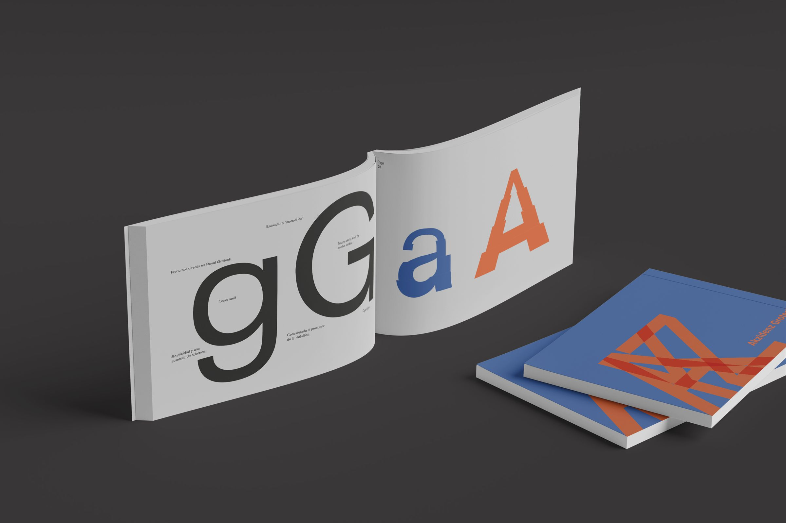
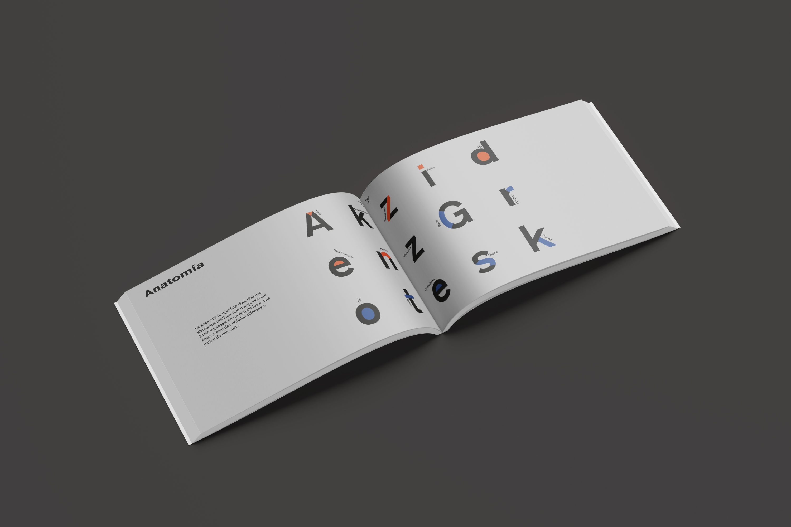
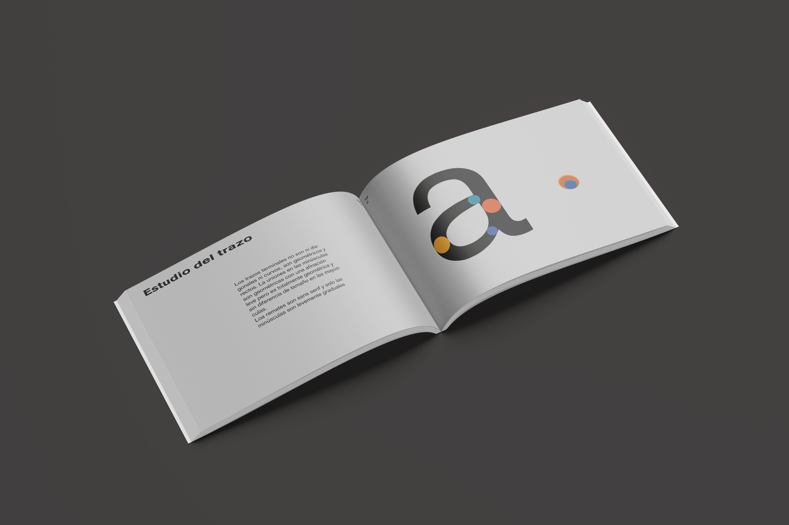

Akzidenz Grotesk — Typographic analysis

Role
Typographic analysis, Editorial design
Type
University project · Type specimen
Year
—
Tools
InDesign, Illustrator, Photoshop
A type specimen catalogue for Akzidenz Grotesk, built on a detailed analysis of what makes the typeface distinctive. Akzidenz Grotesk is a sans-serif known for its simplicity and clarity, and it works equally well in print and on screen.


Anatomy and structure. The analysis covers the typeface's typographic relationships, reference lines, anatomy, spacing and counterforms.
Proportion and stroke. It looks at how consistent proportions and stroke weights give the typeface its steady, harmonious rhythm.


The family. The catalogue examines the family and its variants, from its minimalism and clean terminals to the details that set it apart, such as its distinctive capitals.
Legacy. It closes on the historical relevance of Akzidenz Grotesk and its ongoing influence on graphic design, as a reference point for new work.


The project combined typographic research and editorial design in a single catalogue, where the layout itself puts the analysis into practice.